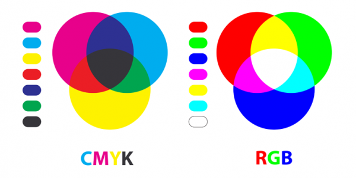

Kleurmodellen worden gebruikt om pixels op te slaan. Elke pixel heeft een eigen kleur, waardoor afbeeldingen ontstaan. De twee belangijkste kleurmodellen zijn het RBG- en het CMY-model.
Het RGB model wordt gebruikt om kleuren digitaal weer te geven. Het model is gebaseerd op de kleuren rood, groen en blauw. Deze kleuren zijn de basis van alle kleuren . Door de zwarte achtergrond van het RGB model ontstaat de kleur wit als je alle kleuren van het model toevoegd.
Het CMY model wordt gebruikt om kleur op een witte achtergrond te zetten. In dit model worden de
kleuren:cyaan, magenta en geel gebruikt. Als je alle kleuren van dit model toevoegd krijg je donkergrijs
niet zwart. Als je zwart wil krijgen moet de kleur ernaa worden toegevoegd. Zo ontstaat het CMYK-model.
De K staat voor key of voor black.
